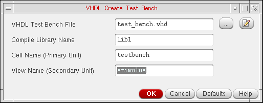

4
Creating a Testbench
A testbench is typically an entity/architecture pair, which instantiates the top-level cell and provides stimulus to the Design Under Test (DUT). By using the VHDL Create Test Bench form, you can:
- Provide details about an external testbench for the top-level design that you want to simulate.
- Provide details to be used during auto-generation of the testbench by VHDL Toolbox.
- Edit the auto-generated testbench.
This chapter describes how you can use the VHDL Toolbox to configure properties for a testbench and the various methods used for creating a testbench.
In this chapter, you will learn about the following topics:
For information on the SKILL functions associated with VHDL Toolbox, see Digital Design Netlisting and Simulation SKILL Reference.
VHDL Create Test Bench Form
The VHDL Create Test Bench form contains fields that you can use to configure the properties of a testbench. To open the VHDL Create Test Bench form:
-
In the VHDL Toolbox window, choose Commands – Edit Test Bench.
The VHDL Create Test Bench form appears, as shown in the figure below.

The various options on the VHDL Create Test Bench form are:
-
VHDL Test Bench File: Specifies the name of input testbench file, which needs to be compiled with the generated netlists. When you specify the testbench file, you also need to ensure that the Include the specified Test-Bench in simulation check box on the VHDL Setup - Simulation form is selected. The current version of the VHDL Toolbox allows you to specify only a single testbench file. If the entity and architecture of a testbench are defined in separate files, you need to combine these files to get a single file.If an auto generated testbench exists for current cellview in the specified run directory, the path to that testbench is displayed. To edit the testbench already created, click the edit button next to the VHDL Test Bench File field. The testbench is opened in the default editor where you can make changes.
Default:test_bench.vhd - Compile Library Name: Specifies the library in which a testbench is compiled. A testbench is usually compiled in the same library as the top level design. However, you can change the value in the textfield to compile a testbench in a different library. The textfield contains the name of the top cell library by default.
-
Cell Name (Primary Unit): Specifies the name of the entity in the testbench. The entity name is
testbenchby default. However, you can change the value in the textfield, if the entity in the testbench has a name other thantestbench. -
View Name (Secondary Unit): Specifies the name of the architecture in the testbench. The architecture name is
stimulusby default. However, you can change the value in the textfield, if the architecture in the testbench has a name other thanstimulus.
Methods to Create a Testbench
You can create a testbench for the top level schematic in two ways:
- Generate a testbench automatically during netlist creation
- Attach an existing testbench with the schematic
Automatic Generation of Testbench
To create a testbench automatically, select the Generate Test Bench Template option on the Netlist Options tab of the VHDL Setup - Netlist form. When this option is used, the VHDL Toolbox creates a testbench and saves it as test_bench.vhd in the run directory.
The default structure of the testbench is as given below:
<Default Context Clause>
ENTITY <entname>
END [ENTITY] <entname>
<Default Context Clause>
<use lib clause>
ARCHITECTURE <archname> of <entname> IS
< COMPONENT DECLARATION>
< SIGNAL DECLARATION >
BEGIN
<INSTANCE NAME> : < BINDING >
PORT MAP (
<formal_1> => <actual_1>
…
)
END [ARCHITECTURE] <archname>
The instances are bound in the testbench in the same way as done during netlist creation, as described below:
-
In case of VHDL 93, the direct entity binding is used.
For example,
<instname> : USE ENTITY <lib>.<topcell>(<view>). -
In case of VHDL 87, the component and open binding is used.
For example,
<instname> : <topcell>. -
In case of config, the instances are bound to the config of the top cell.
For example,
<instname> : configuration <lib>.<top_config_name>
You can configure details, such as the file name or the library name of the testbench to be generated, using the VHDL Create Test Bench form. Alternatively, you can also set certain SKILL variables. For more details, refer SKILL Variables to Configure Testbench Creation.
To view and edit the auto generated testbench, choose Commands – Edit Test Bench. The VHDL Create Test Bench form appears. The name and path of the testbench file appears in the VHDL Test Bench File field. To open the test bench in the default editor and make changes to the file, click the edit button .
Providing an Existing Testbench
If you have an existing testbench, provide its details to VHDL Toolbox using the VHDL Create Test Bench form. For more details about this form, refer to VHDL Create Test Bench Form.
SKILL Variables to Configure Testbench Creation
You can use the following SKILL variables to configure the testbench:
-
hnlVHDLGenTestBench: Specifies if the testbench is to be generated automatically during netlist generation. By default, this variable is set asnil. -
vhdlSimTestBenchLCV: Sets the name of the library, cell and view for which testbench is to be created. By default, this variable is set as'(<top_cell_lib> "testbench" "stimulus"). -
hnlVHDLTestBenchInstName: Sets the name of instance for the testbench. By default, this variable is set asdut. -
vhdlSimTestBenchFile: Sets the name of the testbench file. By default, this variable is set astest_bench.vhd.
Return to top